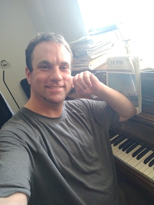

Jeff is currently accepting piano and composition students and can be reached at jeff731@juno.com
About
Jeff was born in the Western US into humble circumstances. His parents were amateur musicians and his grandmother a proficient pianist and teacher who inspired him. He began exhibiting extraordinary talent for music from the earliest years, playing tunes by ear and teaching himself piano. By age 10 local teachers had taught him everything they could and sought help from the University of Utah to further his education. He began studying with Dr. Bonnie Gritton and was concurrently enrolled with the University's music program and work release from public school, eventually skipping 2 years of public school. He started winning local, regional and national competitions such as the UMTA, Joy Robin, Utah State Fair, Missoula Concerto and Stravinsky awards competition, judged by Ivo Pogorelich. He caught the attention of local audiences, playing at Symphony Hall, Temple Square, for 2 Governors of Utah and live for a session of Congress. He was awarded full scholarships to multiple universities and completed his Bachelor's degree at Utah State University under Dr. Gary Amano. During this time he worked with Ballet West, NPR radio, Good morning America, Stephen Hough, Angela Hewitt, Dr. Craig Jessop, Jay Richards, Peter Cetera, Maureen McGovern, and more. He was also teaching many students and contributing a steady stream of original compositions and arrangements, eventually becoming Director & Conductor of the Magna Orchestra. He has also devoted many hours to volunteer work through music, performances, teaching and outreach, and continues following a unique path in music to this day.